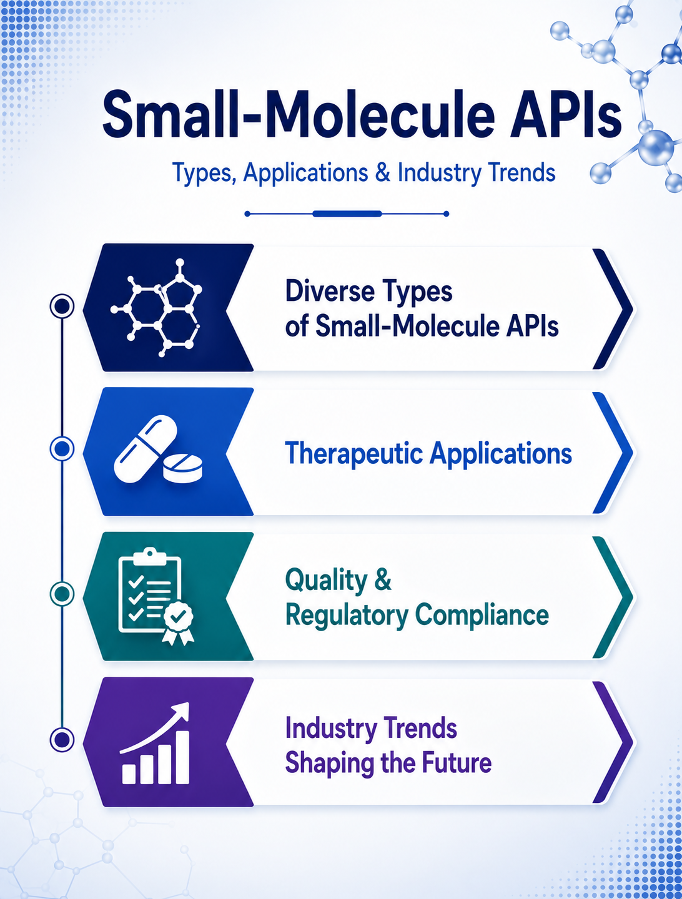

Small Molecule API Manufacturing: Quality & Industry Outlook
14 August 2026

Small-molecule Active Pharmaceutical Ingredients (APIs) remain a core component of pharmaceutical manufacturing, serving as the active substances responsible for the therapeutic effect of many medicines. Small molecule API manufacturing continues to dominate global pharmaceutical supply chains, ensuring reliable therapeutic outcomes across generic, branded, and specialty medicines.
The small molecule API manufacturer sector encompasses a wide variety of chemical compounds, ranging from relatively straightforward molecules to highly complex structures requiring multi-step synthesis and specialized process controls.
Small molecule API manufacturers operate across different production scales and may offer capabilities ranging from process development and route optimization to clinical supply and commercial manufacturing.
Understanding the Small Molecule API Manufacturing Landscape
Small molecule API manufacturing is generally achieved through chemical synthesis, although the specific route varies according to the molecule. Production may involve reaction, extraction, isolation, purification, crystallization, drying, milling, and other processing steps.
The manufacturing route selected for a small molecule API can influence yield, impurity formation, production cost, environmental impact, and scalability. Process development therefore plays an important role in converting a laboratory synthesis into a reproducible and commercially viable manufacturing process.
For pharmaceutical companies, a capable small molecule API manufacturer may provide support across multiple stages, including process optimization, analytical development, technology transfer, scale-up, validation, and commercial production.
From Laboratory to Commercial Scale: Role of Small Molecule Drug Manufacturers
The transition from laboratory synthesis to commercial production is an important stage in small molecule API manufacturing. A manufacturing route that performs well at laboratory scale may require optimization before it can be implemented consistently at larger volumes.
Process development can focus on reaction efficiency, raw-material selection, impurity formation, solvent systems, yield, isolation, purification, and crystallization. Scale-up studies can then evaluate whether the process remains robust under commercial manufacturing conditions.
Technology transfer between development and manufacturing sites may also require detailed process knowledge, analytical methods, equipment assessment, and defined control strategies areas where a small molecule drug manufacturer plays a critical role.
Therapeutic Applications Supported by Small Molecule Manufacturing
Small molecule manufacturing supports medicines across a broad range of therapeutic areas. Their applications include cardiovascular diseases, central nervous system disorders, infectious diseases, oncology, metabolic and endocrine conditions, gastrointestinal diseases, respiratory disorders, dermatological treatments, and other pharmaceutical applications.
The manufacturing requirements can differ considerably even within the same therapeutic area. Molecular structure and physicochemical characteristics generally have a greater influence on manufacturing strategy than therapeutic classification alone.
Buyer Considerations When Selecting a Small Molecule API Manufacturer
Supplier selection involves more than reviewing an API manufacturer's product portfolio. Pharmaceutical companies may evaluate the small molecule API manufacturer’s technical experience, manufacturing infrastructure, quality systems, regulatory capabilities, and ability to meet project-specific requirements.
Important areas of assessment can include:
- Experience with the relevant molecule or chemical class
- Synthetic route and process development expertise
- Manufacturing scale capacity
- Analytical development and characterization
- Impurity and degradation-product control
- GMP quality systems
- Regulatory documentation
- Stability and quality data
- Packaging, storage, and transportation capabilities
For small molecule manufacturing programs, the ability to support technology transfer and scale-up can also be important. For commercial products, production capacity, consistency, cost competitiveness, and long-term supply reliability may receive greater attention.
Expanding with Small Molecule API Contract Manufacturing Services
Pharmaceutical companies may work with external partners when they require additional production capacity, specialized technical capabilities, or access to established infrastructure. Small molecule API contract manufacturing services can support activities ranging from route development and process optimization to clinical-stage production, scale-up, validation, and commercial supply.
The suitability of a small molecule API contract manufacturing partner depends on factors such as technical expertise, facility capabilities, quality systems, regulatory experience, manufacturing capacity, project management, and supply-chain reliability.
Building Supply Resilience with Small Molecule Manufacturers
Reliable Small molecule API supply depends on more than manufacturing capacity alone. Pharmaceutical companies may consider the availability of critical raw materials, supplier networks, production locations, logistics, inventory management, and contingency planning.
A robust small molecule manufacturer with strong quality systems and supply-chain controls can help support continuity of pharmaceutical production. For strategic Small molecule APIs, companies may also evaluate secondary suppliers or alternative manufacturing locations as part of broader supply-risk management.
Future Outlook for Small Molecule API Manufacturing
Small molecule API manufacturing is likely to remain an essential part of the global pharmaceutical supply chain. Their established role across generic, branded, and specialty medicines provides a broad manufacturing base, while continued innovation is creating opportunities for more efficient and sophisticated production approaches.
The future of the small molecule API contract manufacturing services sector will be shaped by efficiency, process innovation, regulatory requirements, sustainability objectives, supply-chain resilience, and the growing complexity of pharmaceutical development.
For pharmaceutical companies, selecting the right small molecule drug manufacturer will increasingly require a combination of technical capability, quality performance, regulatory readiness, manufacturing capacity, commercial competitiveness, and dependable long-term supply.